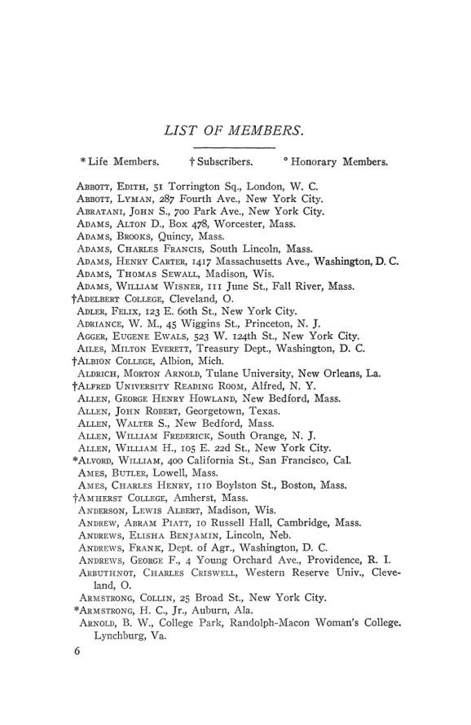

O manual de 1907: 1.040 sócios e um boletim a caminho
Leitura: 4 min
O manual de 1907 traz o estatuto, a lista de sócios, as atas de Providence e a quarta lista de teses em curso: mais sócios, menos caixa e a decisão de lançar um boletim profissional.


Em 27 de dezembro de 1906, em Providence, o secretário interino Ernest L. Bogart informou que a associação tinha 1.040 sócios e assinantes, oito a mais que um ano antes. Seis sócios haviam morrido, 26 renunciado e três sido excluídos; três assinantes desistiram. Entraram 29 sócios e 17 assinantes. Bogart ocupava o posto porque o secretário, W. M. Daniels, ia se ausentar do país, e o escritório se mudara de Ithaca para Princeton.
Os números estão no Hand Book of the American Economic Association de 1907, suplemento do nº 2 do vol. 8 da terceira série das Publications. A estrutura repete a do manual de 1906, comentado no nº 80: propósitos da associação, estatuto revisto em dezembro de 1905, lista de sócios, atas da décima nona reunião anual e a quarta lista de teses de doutorado em economia política em andamento. O texto de abertura acrescenta duas novidades: a reunião de 1907 seria em Madison, e um boletim de bibliografia e notas sairia ainda naquele ano.
Para onde ia o dinheiro?
Para um boletim trimestral. O Comitê Executivo aprovou gastar até US$ 1.200 por ano com ele e convidou C. W. A. Veditz, da George Washington University, para editor. O plano previa resenhas assinadas, resenhas de periódicos, notícias acadêmicas e bibliografias de publicações oficiais e estatísticas, com vinte seções e estreia prevista para abril de 1907. Bogart admite que o boletim provavelmente consumiria boa parte do excedente, mas diz ser difícil imaginar uso mais proveitoso. O Comitê de Publicações, por sua vez, registrou que os quatro números do ano saíram no prazo pela primeira vez, agora impressos pela Princeton University Press.
A lista de teses, de 1º de janeiro de 1907, tem mais de noventa nomes em onze instituições. Columbia lidera com 32, ante 27 no ano anterior; seguem Harvard com 17, Wisconsin com 14 e Johns Hopkins com 10, quase todas sobre sindicatos americanos. Os temas continuam dominados por finanças de estados e cidades, ferrovias, tarifas, trabalho e indústrias específicas, do tabaco ao latão. Há candidatos do Japão, que estudam as finanças públicas japonesas e as de Formosa, e várias mulheres, de Bryn Mawr, Radcliffe, Columbia, Cornell e Wisconsin. Duas teses dialogam com esta coleção: Wilbur O. Hedrick estuda a tributação das ferrovias em Michigan, tema que Snider tratou para Wisconsin no nº 81, e Harry George Friedman, a tributação das corporações em Massachusetts, estado cujas finanças Bullock reconstituiu no nº 83. John Maurice Clark prepara, em Columbia, uma teoria das tarifas ferroviárias.
Na minha leitura
Na minha leitura, o manual de 1907 mostra uma associação que passa da fase de acumular para a de investir. O número de sócios fica praticamente estável, o caixa cai pela primeira vez e a decisão é gastá-lo num instrumento de rotina profissional: bibliografia, resenhas e notícias, mais do que monografias. A lista de teses confirma o perfil de uma disciplina voltada para instituições concretas, com a tributação e as finanças subnacionais como campo dominante.
Glossário
- Assinante (subscriber)
- instituição ou pessoa que recebe as publicações sem ser sócia, como as bibliotecas.
- Secretário interino (acting secretary)
- quem exerce o cargo de secretário durante a ausência do titular.
- Comitê Executivo
- órgão que cuida dos interesses da associação entre as reuniões anuais.
Artigos desta edição
- American Economic Association — texto institucional (pp. 1–2). Apresenta a associação, seus sócios e quase duzentos assinantes, o histórico das publicações desde março de 1886 e as reuniões conjuntas com a American Historical Association. Anuncia a reunião de 1907 em Madison e um boletim de bibliografia e notas para o ano corrente. Reafirma que a associação não é órgão de partido, seita ou instituição e que toda a receita vai para publicações e reuniões. JSTOR
- Constitution of the American Economic Association — texto revisto na reunião anual de dezembro de 1905 (pp. 3–5). Mesmo texto do manual de 1906: pesquisa econômica, em especial o estudo histórico e estatístico das condições reais da vida industrial, publicações e plena liberdade de discussão, sem posição partidária. Anuidade de três dólares, contribuição vitalícia de cinquenta e até 25 sócios honorários estrangeiros. JSTOR
- List of Members (pp. 6–29). Relação alfabética de sócios e assinantes, com endereços e sinais para sócios vitalícios, assinantes e honorários. Professores, funcionários públicos, profissionais liberais, faculdades e bibliotecas públicas aparecem lado a lado. JSTOR
- The Nineteenth Annual Meeting — atas; relatórios de Ernest L. Bogart (pp. 30–41). Atas da reunião de Providence, de 26 a 28 de dezembro de 1906, sob os auspícios da Brown University e em conjunto com as associações de história, ciência política e sociologia: programa, relatórios do secretário e do tesoureiro, o plano do boletim trimestral, a reeleição de Jeremiah W. Jenks para a presidência e a escolha de Madison para 1907. A comissão de auditoria só concluiu o exame das contas em janeiro de 1907. Os trabalhos apresentados estão comentados no nº 82. JSTOR
- Fourth List of Doctoral Dissertations in Political Economy in Progress in American Universities and Colleges, January 1, 1907 — Comitê de Publicações (pp. 42–47). Lista, por instituição, as teses em andamento em 1º de janeiro de 1907, com formação do candidato, tema e data provável de conclusão; omite quem está fora da universidade há mais de três anos. Os temas vão das leis de cereais francesas de 1515 a 1789 e da Levant Company às finanças de Colorado, Cleveland e Boston, aos sindicatos, às ferrovias e à United States Steel Corporation. JSTOR
Fontes
- American Economic Association (pp. 1–2). JSTOR · Internet Archive (PDF)
- Constitution of the American Economic Association (pp. 3–5). JSTOR · Internet Archive (PDF)
- List of Members (pp. 6–29). JSTOR · Internet Archive (PDF)
- The Nineteenth Annual Meeting (pp. 30–41). JSTOR · Internet Archive (PDF)
- Fourth List of Doctoral Dissertations in Political Economy in Progress in American Universities and Colleges, January 1, 1907 (pp. 42–47). JSTOR · Internet Archive (PDF)
- Sumário da edição no JSTOR: Publications of the American Economic Association, 3ª série, vol. 8, nº 2 (suplemento).
Documento em domínio público (EUA, publicado antes de 1931), via JSTOR Early Journal Content e Internet Archive. Resumo e comentário do autor deste site, sem afiliação com a American Economic Association. Encontrou um erro? Escreva: a correção é publicada no próprio texto, com data.
← Nº 83 · Bullock, 1907: 125 anos de dívidas e impostos em Massachusetts Nº 85 · Edwards, 1907: as leis do trabalho em Connecticut, de 1650 a 1906 →